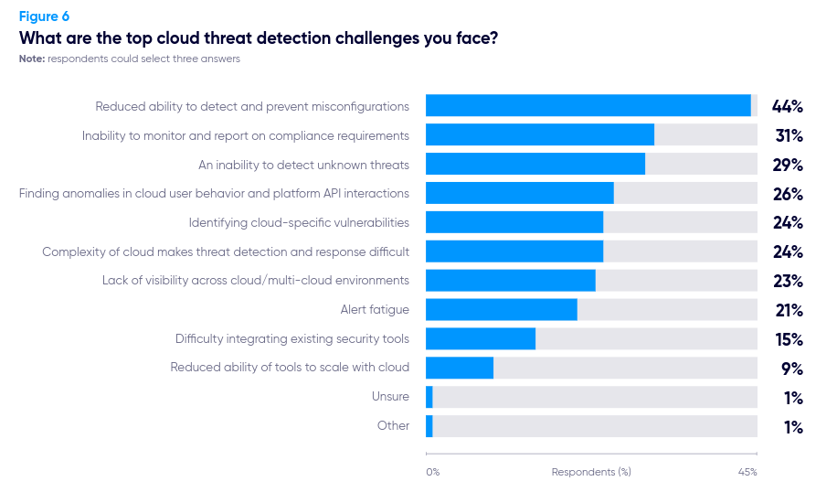

<!-- .slide: data-background="./assets/img/bg.png"; data-state="hide-menubar"; --> # 10 ways to **\<redacted\>**<!-- .element: class="fragment custom blur " --> in a MultiCloud Environment --- <!-- .slide: data-state="hide-menubar"; --> ## $ whoami <div> üëã From Yucatán <img src="./assets/img/bandera.jpg" alt="bandera de la hermana republica :v" width="3%" height="auto"><BR><img src="./assets/img/tacos.jpg" alt="" width="15%" height="auto"> <img src="./assets/img/ceviche.jpg" alt="" width="15%" height="auto"> <img src="./assets/img/mtb.jpg" alt="" width="11%" height="auto"> <img src="./assets/img/chuburna.jpg" alt="" width="15%" height="auto"></div><!-- .element: class="fragment" --> FLOSS (Debian since 2006) <!-- .element: class="fragment" --> Cloud Security (AWS, GCP, Azure)</div><!-- .element: class="fragment" --> Lead Security Systems Engineer @ EPAM Systems <!-- .element: class="fragment" --> --- <!-- .slide: data-state="hide-menubar"; --> ## üóÇÔ∏è Agenda 01. MultiCloud Security Situation<!-- .element: class="animate__flipInX" --> 02. Metadata Explotation<!-- .element: class="animate__flipInX" --> 03. Exposed Services<!-- .element: class="animate__flipInX" --> 04. Takerovers<!-- .element: class="animate__flipInX" --> 05. Overpermissive<!-- .element: class="animate__flipInX" --> 06. Until You Remember<!-- .element: class="animate__flipInX" --> 07. Secure Baseline<!-- .element: class="animate__flipInX" --> 08. Ownership<!-- .element: class="animate__flipInX" --> 09. Leaks<!-- .element: class="animate__flipInX" --> 10. Enforcement<!-- .element: class="animate__flipInX" --> 11. DevOps<!-- .element: class="animate__flipInX" --> --- <!-- .slide: data-background="./assets/img/bg.png"; data-state="hide-menubar"; data-name="Intro"; --> ## MultiCloud Security Situation #### Challenges of a secure multi-cloud approach --- ### Quick Definition > Cloud security is the set of cybersecurity measures used to protect cloud-based applications, data, and infrastructure. > > [https://cloud.google.com/learn/what-is-cloud-security](https://cloud.google.com/learn/what-is-cloud-security#section-2) #### Cloud security; <!-- .element: class="fragment" --> **Self Service** <!-- .element: class="fragment highlight-blue" --> and **Flexible**? <!-- .element: class="fragment highlight-blue" --> --- <!-- .slide: data-background="./assets/img/rocket-bug.webp"; data-background-size="10%"; data-background-position="5% 15%"; --> ### State of the Art  Source: [Current state of Cloud Security, CSHub 2023](https://www.cshub.com/cloud/reports/the-future-of-cloud-security) <!-- .element: style="text-align: right;"--> --- ### Cloud Service Providers vs Misconfigurations #### Why are we still failing so often? [https://cloud.google.com/blog/products/identity-security/automatically-disabling-leaked-service-account-keys-what-you-need-to-know](https://cloud.google.com/blog/products/identity-security/automatically-disabling-leaked-service-account-keys-what-you-need-to-know)<!-- .element: class="fragment" --> [https://docs.aws.amazon.com/securityhub/latest/userguide/fsbp-standard.html](https://docs.aws.amazon.com/securityhub/latest/userguide/fsbp-standard.html)<!-- .element: class="fragment" --> --- #### Hey redteam [https://hacktodef.com/addressed-aws-defaults-risks-oidc-terraform-and-anonymous-to-administratoraccess](https://hacktodef.com/addressed-aws-defaults-risks-oidc-terraform-and-anonymous-to-administratoraccess) [https://unit42.paloaltonetworks.com/large-scale-cloud-extortion-operation/](https://unit42.paloaltonetworks.com/large-scale-cloud-extortion-operation/) [https://ramimac.me/poisoning-ssm-command-docs](https://ramimac.me/poisoning-ssm-command-docs) [https://dagrz.com/writing/aws-security/hacking-github-aws-oidc/](https://dagrz.com/writing/aws-security/hacking-github-aws-oidc/) [https://www.scmagazine.com/news/critical-vulnerabilities-in-6-aws-services-disclosed-at-black-hat-usa](https://www.scmagazine.com/news/critical-vulnerabilities-in-6-aws-services-disclosed-at-black-hat-usa) [https://medium.com/@adammesser_51095/cloud-digital-forensics-and-incident-response-aws-iam-privilege-escalation-leads-to-ec2-2d787a4e99a7](https://medium.com/@adammesser_51095/cloud-digital-forensics-and-incident-response-aws-iam-privilege-escalation-leads-to-ec2-2d787a4e99a7) [https://blog.richardfan.xyz/2024/08/02/reusable-workflow-is-good-until-you-realize-your-identity-is-also-reusable-by-anyone.html ](https://blog.richardfan.xyz/2024/08/02/reusable-workflow-is-good-until-you-realize-your-identity-is-also-reusable-by-anyone.html ) [https://github.com/RyanJarv/awesome-cloud-sec](https://github.com/RyanJarv/awesome-cloud-sec) --- <!-- .slide: data-background="./assets/img/bg.png"; data-state="hide-menubar"; data-name="Metadata"; --> ## Metadata Explotation #### 169.254.169.254, are you there?<!-- .element: class="fragment animate__flipInX" --> --- ### Metadata Service - Gives information to the service or resource about the cloud context - Resources can be provided with an identity to the CSP (cloud service provider) using roles or service accounts via tokens --- ### Server-Side Request Forgery <div id="left"> #### Which types of applications are vulnerable? - Profile image loaders (often allowing users to specify a URL) - Webhook services & external data processors - PDF generators - Unrestricted file uploads (via an XML file for example) - CORS proxies (used to bypass CORS browser restrictions) - Request header processing (such as the Host or X-Forwarded-For request header) Source: https://blog.intigriti.com/hacking-tools/ssrf-a-complete-guide-to-exploiting-advanced-ssrf-vulnerabilities </div> <div id="right">  </div> --- ### Abusing SSRF in ... #### AWS, GCP, Azure, Docker, Rancher, K8s, Alibaba, Digital Ocean, IBM Cloud, etc ... <div id="left">  Source: https://github.com/swisskyrepo/PayloadsAllTheThings/blob/master/Server%20Side%20Request%20Forgery/README.md#ssrf-url-for-cloud-instances </div> <div id="right">  </div> --- ### AWS Protection #### Enable IMDSv2 > Note that if the EC2 instance is enforcing IMDSv2, according to the docs, the response of the PUT request will have a hop limit of 1, making impossible to access the EC2 metadata from a container inside the EC2 instance. > > Moreover, IMDSv2 will also block requests to fetch a token that include the X-Forwarded-For header. This is to prevent misconfigured reverse proxies from being able to access it. Source: https://docs.aws.amazon.com/AWSEC2/latest/UserGuide/instance-metadata-v2-how-it-works.html --- ### GCP? Azure? GCP ```default ## Google Cloud (Header Sometimes Required) # https://cloud.google.com/compute/docs/metadata # - Requires the header "Metadata-Flavor: Google" or "X-Google-Metadata-Request: True" on API v1 # - Most endpoints can be accessed via the v1beta API without a header http://169.254.169.254/computeMetadata/v1/ http://metadata.google.internal/computeMetadata/v1/ http://metadata/computeMetadata/v1/ http://metadata.google.internal/computeMetadata/v1/instance/service-accounts/default/token ``` Azure ```defaul # Azure (Header Required) # Must contain the header "Metadata: true" # Must not contain an X-Forwarded-For header http://169.254.169.254/metadata/instance?api-version=2021-02-01 ``` --- <!-- .slide: data-background="./assets/img/bug1.webp"; data-background-size="10%"; data-background-position="95% 15%"; --> ### IMDScape (Fixed) - EKS nodes uses IMDS to fetch the K8S api token - Get token from IMDS, then use it on k8s api - With the token, you can interact at high level as the node permission - Permits you to login --- <!-- .slide: data-background="./assets/img/bg.png"; data-state="hide-menubar"; data-name="Exposed Services"; --> ## Exposed Services #### Public buckets and more!<!-- .element: class="fragment animate__flipInX" --> --- ### Behind public storage ... #### Many cloud services are public<!-- .element: class="fragment animate__bounceInLeft" --> - Anyone can invoke my function?<!-- .element: class="fragment custom blur " --> - The image registries should be open?<!-- .element: class="fragment custom blur " --> - Anyone can publish/subscribe to your queue?<!-- .element: class="fragment custom blur " --> - Backups, snapshots can be wide open by¬†mistake...<!-- .element: class="fragment custom blur " --> --- ### AWS exposable resources - Resources that could be indirectly exposed through another resource are not included. - Some resources may require multiple things configured a certain way to be considered public. > [https://github.com/SummitRoute/aws_exposable_resources](https://github.com/SummitRoute/aws_exposable_resources) --- ### AWS exposable resources | | | | --- | --- | | Resources that can be made public through resource policies | - ECR Repository<br>- Lambda<br>- Lambda layer<br>- Serverless Application Repository<br>- Backup<br>- EFS<br>- Glacier<br>- S3<br>- IAM Role<br>- KMS Keys<br>- Secrets Managers<br>- CloudWatch Logs<br>- EventBridge<br>- MediaStore<br>- ElasticSearch<br>- Glue<br>- SNS<br>- SQS<br>- SES | | Resource that can be made public through sharing APIs | - AMI<br>- FPGA image<br>- EBS snapshot<br>- RDS snapshot<br>- RDS DB Cluster snapshot | | Resources that can be made public through network access | - API Gateway<br>- CloudFront<br>- Redshift<br>- RDS<br>- EC2<br>- Elastic IP<br>- ECS<br>- Global Accelerator<br>- ELB<br>- Lightsail<br>- Neptune<br>- ElasticCache<br>- EMR| <!-- .element: style="font-size: .5em"--> --- ### AWS EFS inside a VPC (by design) - By default, no access policy - `nfs-ls "nfs://fs-random.efs.blah/?version=4"` --- ### GCP? - API Gateway - Big Query - Big Table - Cloud Run - Cloud Tasks - Cloud Build - Cloud Deploy - Cloud Functions - Compute - Dataplex - Dataproc - GKE - IaP - Storage - Spanner - Etc > [https://github.com/JOSHUAJEBARAJ/gcp_exposable_resources](https://github.com/JOSHUAJEBARAJ/gcp_exposable_resources) --- ### 1. Perform an inventory > Verify the configuration of each resource. Verification can be tedious, use automation tools to detect misconfigurations (static based like checkov, trivy, semgrep) or dynamic based on roles. (CSPMs) More info: https://cloud.hacktricks.xyz/pentesting-cloud/pentesting-cloud-methodology --- ### 2. Tag Enforcement - Allow only tagged resources to be public: > PublicResource: "images for project ABC" - Not tagged, not created --- ### 3. Notification - Notify teams and service owners --- <!-- .slide: data-background="./assets/img/bg.png"; data-state="hide-menubar"; data-name="Takeovers"; --> ## Takerovers #### Sorry, that was yours? :D<!-- .element: class="fragment animate__flipInX" --> --- ### Fighting with pointers, but is not C - Services that point to no-existing/no-where:<!-- .element: class="fragment" --> - Resources with unique names inside the CSP, was deleted but has references<!-- .element: class="fragment" --> - Resources that are released but still has references<!-- .element: class="fragment" --> --- ### Common takeovers AWS S3 bucket takeover [https://infosecwriteups.com/aws-s3-subdomain-takeover-79d705cc3553](https://infosecwriteups.com/aws-s3-subdomain-takeover-79d705cc3553) AWS EIP takeover [https://zonduu.medium.com/the-secrets-behind-ec2-takeovers-706af7dfe86](https://zonduu.medium.com/the-secrets-behind-ec2-takeovers-706af7dfe86) GCP Storage takeover (and more) [https://hackerone.com/reports/1398706](https://hackerone.com/reports/1398706) --- ### Funny takeovers (1/2) - A CSP host a zone and points to another zone in a different CSP or CDN (NS Record)<!-- .element: class="fragment" --> - dig +trace<!-- .element: class="fragment" --> - PWNED!<!-- .element: class="fragment" --> --- ### Funny takeovers (2/2) - CNAMEs and S3 static website<!-- .element: class="fragment" --> - A static website is hosted in S3<!-- .element: class="fragment" --> - A CNAME dev.concebolla.cochinita.com points to s3-website-us-west-1.amazonaws.com<!-- .element: class="fragment" --> - Another CNAME yahayhambre.org points to first CNAME<!-- .element: class="fragment" --> - PWNABLE<!-- .element: class="fragment highlight-red" --> <!-- .element: class="fragment" --> <!-- .element: class="fragment" --> > [https://docs.aws.amazon.com/AmazonS3/latest/userguide/VirtualHosting.html#VirtualHostingCustomURLs](https://docs.aws.amazon.com/AmazonS3/latest/userguide/VirtualHosting.html#VirtualHostingCustomURLs)<!-- .element: class="fragment" --> --- ### How to spot them and probably apply a fix  [https://aws.amazon.com/blogs/security/automated-response-and-remediation-with-aws-security-hub/](https://aws.amazon.com/blogs/security/automated-response-and-remediation-with-aws-security-hub/) --- <!-- .slide: data-background="./assets/img/bg.png"; data-state="hide-menubar"; data-name="Overpermissive"; --> ## Overpermissive #### \*:\*<!-- .element: class="fragment animate__flipInX" --> --- ### ConfusedFunction #### Default SA is too powerful This default Cloud Build service account gives the user excessive permissions. An attacker who gains access to create or update a Cloud Function can take advantage of the function‚Äôs deployment process to escalate privileges to the default Cloud Build service account. The attacker could leverage the high privileges of the default Cloud Build service account in other GCP services that are created when a Cloud Function is created or updated, including Cloud Storage, and Artifact Registry or Container Registry. Source: https://www.tenable.com/blog/confusedfunction-a-privilege-escalation-vulnerability-impacting-gcp-cloud-functions --- ### What about ReadOnlyAccess? - cognito-identity:GetCredentialsForIdentity ‚Äì Grants permission to return credentials for the provided identity ID. - cognito-identity:GetOpenIdToken ‚Äì Grants permission to get an OpenID token, using a known Cognito ID. - cognito-identity:GetOpenIdTokenForDeveloperIdentity ‚Äì Grants permission to register (or retrieve) a Cognito IdentityId and an OpenID Connect token for a user authenticated by your backend authentication process. - cognito-idp:GetSigningCertificate ‚Äì Returns the signing certificate. - connect:GetFederationToken ‚Äì Grants permission to federate into an Amazon Connect instance when using SAML-based authentication for identity management. - ec2:GetPasswordData ‚Äì Grants permission to retrieve the encrypted administrator password for a running Windows instance. - ecr:GetAuthorizationToken ‚Äì Grants permission to retrieve a token that is valid for a specified registry for 12 hours. - gamelift:GetInstanceAccess ‚Äì Grants permission to request remote access to a specified fleet instance. - s3:GetObject ‚Äì Grants permission to retrieve objects from Amazon S3. - ssm:GetParameter ‚Äì Grants permission to view information about a specified parameter. - ssm:GetParameters ‚Äì Grants permission to view information about multiple specified parameters. - ssm:GetParametersByPath ‚Äì Grants permission to view information about parameters in a specified hierarchy. - sts:GetSessionToken ‚Äì Grants permission to obtain a set of temporary security credentials (consisting of an access key ID, a secret access key, and a security token) for an AWS account or IAM user. [https://www.sidechannel.blog/en/unwanted-permissions-that-may-impact-security-when-using-the-readonlyaccess-policy-in-aws/](https://www.sidechannel.blog/en/unwanted-permissions-that-may-impact-security-when-using-the-readonlyaccess-policy-in-aws/) --- <!-- .slide: data-background="./assets/img/bug2.webp"; data-background-size="10%"; data-background-position="95% 85%"; --> ### Least Privilege Don't go forward to "*", start with some Get or List, if apply. Use conditionals (AWS) Create custom roles (GCP) [https://repost.aws/knowledge-center/sqs-access-policy-least-privilege](https://repost.aws/knowledge-center/sqs-access-policy-least-privilege) [https://aquasecurity.github.io/tfsec/v1.0.0/checks/aws/iam/no-policy-wildcards/ ](https://aquasecurity.github.io/tfsec/v1.0.0/checks/aws/iam/no-policy-wildcards/ ) --- <!-- .slide: data-background="./assets/img/bg.png"; data-state="hide-menubar"; data-name="Until"; --> ## Until You Remember #### Used 450 days ago. 800 days old.<!-- .element: class="fragment animate__flipInX" --> --- ### When was your last IAM Audit, Cloud Clean Up? <div id="left"> - Define an acceptable time of usage - Remove console access if not needed - Remove unused API keys - Not used? Remove the account - Remove roles that trusted by external sources if they are not used - Remove accounts, projects or subscriptions you don‚Äôt use - Verify the activity of the roles, is normal? - Service accounts are normal? - Are all the API calls normal? - Which is the most wanted¬†API call? - Times for spikes are related to your operations? </div> <div id="right">  [https://aws.amazon.com/blogs/security/how-to-automate-the-review-and-validation-of-permissions-for-users-and-groups-in-aws-iam-identity-center/](https://aws.amazon.com/blogs/security/how-to-automate-the-review-and-validation-of-permissions-for-users-and-groups-in-aws-iam-identity-center/) </div> --- ### Easy AWS IAM Audit - python scripts using botocore for validations<!-- .element: class="fragment" --> - AWS SSM<!-- .element: class="fragment" --> - Audit Roles on each accounts<!-- .element: class="fragment" --> - Easy right?<!-- .element: class="fragment" --> --- <!-- .slide: data-background="./assets/img/bg.png"; data-state="hide-menubar"; data-name="Secure Baseline"; --> ## Secure Baseline #### Copy & Paste<!-- .element: class="fragment animate__flipInX" --> --- ### How are your accounts, projects and subscriptions created? - Security service accounts - Breaking glass scenario - Hardening - Monitoring - Evaluate one, fix multiple - Made security easy to adopt at Org Level - Defines a base cost for security --- ### Secure based images - Environment for building and testing in every CSP - Dev images and prod images - Trusted accounts/projects/subscription for security images - CIS Benchmarks and security agents/tools for every image - Permissions to access encrypted images - Registrer every image into a centralized platform (call home please) - Instances should perform a selftagging step - OpenScap and scripts that validates every image (verification) --- <!-- .slide: data-background="./assets/img/bug2.webp"; data-background-size="10%"; data-background-position="95% 85%"; --> ### Org policies - Baseline of policies - AWS Guarduty (security AWS Account) - Trusted external accounts --- <!-- .slide: data-background="./assets/img/bg.png"; data-state="hide-menubar"; data-name="Ownership"; --> ## Ownership #### He/She is not working at the company anymore.<!-- .element: class="fragment animate__flipInX" --> --- <!-- .slide: data-background="./assets/img/bug3.webp"; data-background-size="10%"; data-background-position="5% 85%"; --> ### When things goes wrong? Who we are gonna call? - Metadata - Project - Service - Owners - Team - Env - Etc.. - Problems - AWS Tags vs GCP Labels - Operations vs Developers - Communication channels --- ### GitOps 123456789012.yaml ```yaml team: Infosec devops: - benito.juarez@mexico.security - miguel.hidalgo@mexico.security admin: - batman@baticueva.bat ``` --- <!-- .slide: data-background="./assets/img/rocket-bug.webp"; data-background-size="10%"; data-background-position="95% 15%"; --> ### Service IDs, Product IDs - Tag Policy - Default tags - Tags based on resource type - Infosec Tags --- <!-- .slide: data-background="./assets/img/bg.png"; data-state="hide-menubar"; data-name="Leaks"; --> ## Leaks #### Oh no ...<!-- .element: class="fragment animate__flipInX" --> ---  [https://aws.amazon.com/blogs/security/how-to-detect-suspicious-activity-in-your-aws-account-by-using-private-decoy-resources/](https://aws.amazon.com/blogs/security/how-to-detect-suspicious-activity-in-your-aws-account-by-using-private-decoy-resources/) --- ### AWS CloudTrail cheat sheet "Initial Access"|"Execution"|"Persistence"|"Privilege Escalation"|"Defense Evasion"|"Credential Access"|"Discovery"|"Lateral Movement"|"Exfiltration"|"Impact" --- | --- | --- | --- | --- | --- | --- | --- | --- | --- ConsoleLogin|StartInstance|CreateAccessKey|CreateGroup|StopLogging|GetSecretValue|ListUsers|AssumeRole|CreateSnapShot|PutBucketVersioning PasswordRecoveryRequested|StartInstances|CreateUser|CreateRole|DeleteTrail|GetPasswordData|ListRoles|SwitchRole|ModifySnapshotAttributes |RunInstances |Invoke|CreateNetworkAclEntry|UpdateAccessKey|UpdateTrail|RequestCertificate|ListIdentities||ModifyImageAttribute|DeleteAccountPublicAccessBlock |SendCommand|CreateRoute|PutGroupPolicy|PutEventSelectors|UpdateAssumeRolePolicy|ListAccessKeys||SharedSnapshotCopyInitiated| ||CreateLoginProfile|PutRolePolicy|DeleteFlowLogs||ListServiceQuotas||SharedSnapshotVolumeCreated| ||AuthorizeSecurityGroupEgress|PutUserPolicy|DeleteDetector||ListInstanceProfiles||ModifyDBSnapshotAttribute| ||AuthorizeSecurityGroupIngress|AddRoleToInstanceProfile|DeleteMembers||ListBuckets||PutBucketPolicy| ||CreateVirtualMFADevice|AddUserToGroup|DeleteSnapshot||ListGroups||PutBucketAcl| ||CreateConnection||DeactivateMFADevice||GetSendQuota||| ||ApplySecurityGroupsToLoadBalancer||DeleteCertificate||GetCallerIdentity||| ||SetSecurityGroups||DeleteConfigRule||DescribeInstances||| ||AuthorizeDBSecurityGroupIngress||DeleteAccessKey||GetBucketAcl||| ||CreateDBSecurityGroup||LeaveOrganization||GetBucketVersioning||| ||ChangePassword||DisassociateFromMasterAccount||GetAccountAuthorizationDetails||| ||||DisassociateMembers||||| ||||StopMonitoringMembers||||| <!-- .element: style="font-size: .4em"--> > [https://www.invictus-ir.com/news/aws-cloudtrail-cheat-sheet](https://www.invictus-ir.com/news/aws-cloudtrail-cheat-sheet) --- <!-- .slide: data-background="./assets/img/bg.png"; data-state="hide-menubar"; data-name="Enforcement"; --> ## Enforcement #### Cloud security policies everywhere<!-- .element: class="fragment animate__flipInX" --> --- <!-- .slide: data-background="./assets/img/bug1.webp"; data-background-size="10%"; data-background-position="95% 15%"; --> ### They call it: Killer Bot Detect changes on the environments, cross the cloud or inner the cloud. Someone tried to spin up a new instance without following the business practices or a new bucket is exposed without an explanation. Destroy them, disable them, avoid the risk while is sooner and sent the team owner a notification with the explanation. Detection could happen during a code change (PR) or during the interaction in the console (live) More info: https://github.com/hysnsec/awesome-policy-as-code --- <!-- .slide: data-background="./assets/img/bg.png"; data-state="hide-menubar"; data-name="DevOps"; --> ## DevOps #### R.O.S.I. (Return on Security Investment)?<!-- .element: class="fragment animate__flipInX" --> --- ### DevOps Security Challenges DevOps involves the adoption of iterative software development, automation, and the use of programmable, declarative infrastructure. DevOps security issues often stem from conflicts between the different goals of developers and security teams. While the developer's goal is to get software into the pipeline as quickly as possible, security teams want to eliminate as many potential security flaws as possible. - DevOps Teams Don‚Äôt Have Time for Security - Cloud Security - DevOps Toolsets Can Be Risky - Weak Access Controls > [https://www.hackerone.com/knowledge-center/devops-security-challenges-and-6-critical-best-practices](https://www.hackerone.com/knowledge-center/devops-security-challenges-and-6-critical-best-practices) ### Security Engineering<!-- .element: class="fragment animate__flipInX" --> --- ### DevSecOps is a cultural reminder that security is always there. --- <!-- .slide: data-state="hide-menubar"; --> ## Thank you! #### Questions? <!-- .element style="border: 0; background: None; box-shadow: None" width="72%" -->